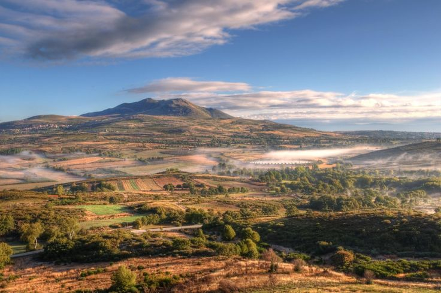

Terra de Barroso · Trás-os-Montes
Montalegre
discover it beyond the map
Castelo, montanha e mistério. Um guia vivo para descobrir a capital do Barroso ao teu ritmo.
877 m
Altitude da vila
805 km²
Área do concelho
≈9 300
Habitantes
25
Freguesias
Explorar · Ao vivo
UM MAPA PARA TE PERDERES (E TE ENCONTRARES)
Ativa as camadas, filtra por aquilo que procuras e toca nos pontos para ver detalhes.
Calendário vivo
Festividades ao longo do ano
Da Feira do Fumeiro à Noite das Bruxas — o ano em Montalegre mede-se em festas.
Trilhos & Natureza
Caminhar o Barroso e o Gerês
Percursos pedestres assinalados, do passeio em família às grandes rotas de montanha.
Ecomuseu de Barroso
Um museu espalhado pelo concelho
O Ecomuseu de Barroso não cabe num edifício: é uma rede de pólos pelas aldeias, cada um a contar uma parte da vida barrosã.
Serviços públicos
O essencial, sempre à mão
Saúde, segurança e serviços do concelho num só sítio. Em emergência, liga 112.
112
Emergência nacionalSOS · 24 h
808
Linha SNS 24808 24 24 24
Sobre o concelho
Montalegre, em poucas linhas
Concelho raiano do Alto Trás-os-Montes, entre o planalto barrosão e o Parque Nacional da Peneda-Gerês.
805 km²
Área do concelho
≈9 300
Habitantes
25
Freguesias
1273
Foral
877 m
Altitude
30+
Aldeias
As aldeias do concelho

Planalto barrosão · Serra do Larouco